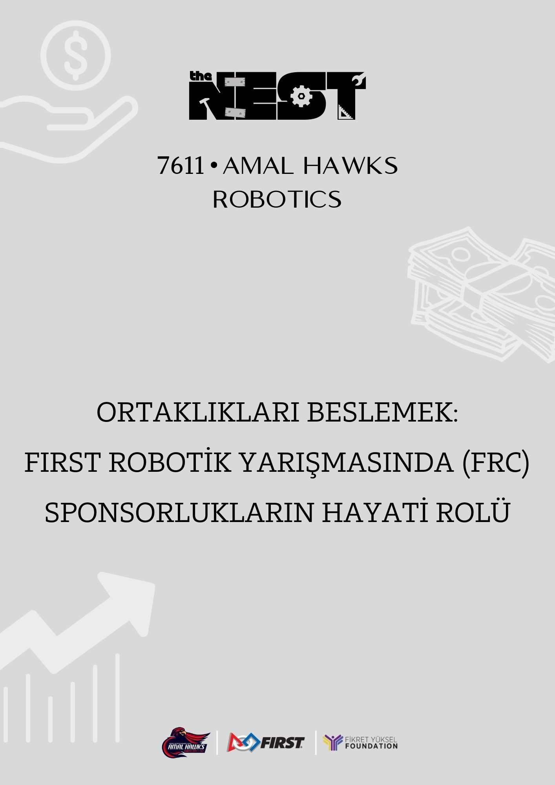
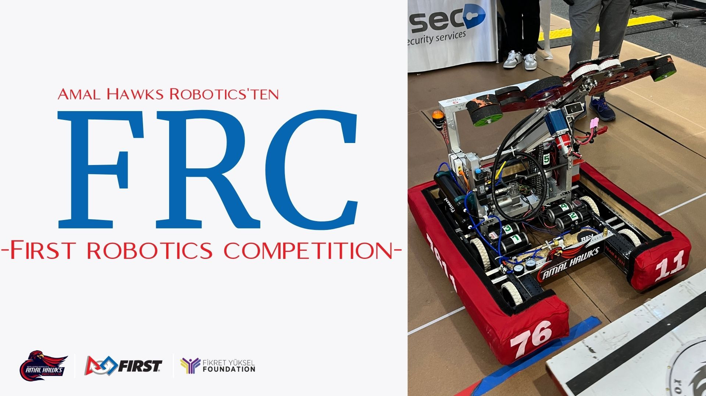
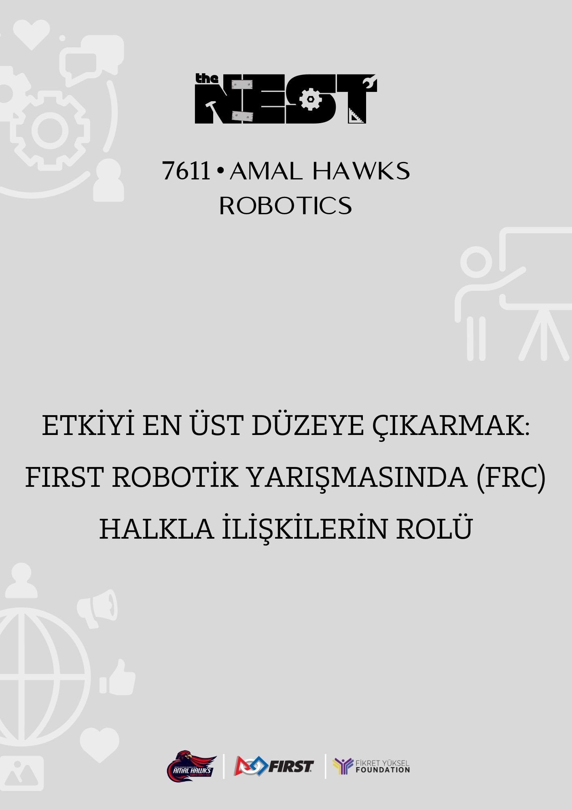

Sıfırdan ileri seviyeye adım adım modüller: Mekanik şasi hesaplamaları, WPILib Java programlama, yapay zeka & AprilTag görüntü işleme ve profesyonel jüri sunum teknikleri.
18+
Eğitim Modülü
60+
Saatlik Müfredat
%100
Ücretsiz & Açık
6
Temel Branş
Öne Çıkan MüfredatYazılım • WPILib 2025
Modern FRC Robot Programlama: Command-Based Java Mimarisi
Subsystems, Commands, PID geribildirim döngüleri, Kalman Filtresi ile otonom konum belirleme ve CAN motor kontrolcülerini uçtan uca kapsayan profesyonel eğitim serisi.
The Nest Yazılım Ekibi6 Hafta Müfredat Java & WPILib
Eğitim Hedefi: Bir robotun sürücü kontrolünden otonom rota takibine kadar tüm yazılım katmanlarını temiz kod (Clean Code) standartlarında inşa etmek.
Müfredat İçeriği:
Modül 1: WPILib kurulumu, VS Code eklentileri ve Git/GitHub ile takım içi işbirliği.
Modül 2: Subsystem yapısı: CANSparkMax (NEO) ve TalonFX (Kraken/Falcon) motor sürücülerinin kapsüllenmesi.
Modül 3: Command & Trigger yapısı: Joystick buton atamaları, sıralı ve paralel komut grupları (Sequential & Parallel Command Groups).
Modül 4: PID ve Feedforward kontrolü: SysId aracı ile mekanizma karakterizasyonu ve PID tuning.
Modül 5: Limelight ve PhotonVision ile AprilTag 3D pozisyon takibi (Vision Pose Estimation).
Modül 6: PathPlanner ile otonom sürüş ve olay tetikleyicileri (Event Markers).
Yükleniyor...
Mekanik 4 Hafta
Mekanik 101: Şasi ve Mukavemet Mühendisliği Müfredatı
West Coast Drive ve Swerve şasi tipleri, 6061-T6 alüminyum profil kesimleri, rulman yuvaları ve CNC/su jeti üretim aşamaları.
Kazanımlar: Şasi geometrisi seçimi, ağırlık merkezi simülasyonu ve talaşlı üretim teknikleri.
Haftalık Ders Planı:
Hafta 1: Şasi tiplerinin karşılaştırılması: Swerve vs Tank (West Coast).
Hafta 2: Mukavemet analizleri ve profil et kalınlıkları (1/16" vs 1/8").
Hafta 3: Şanzıman (Gearbox) montajı, mil yataklaması ve zincir/kayış gerdirme.
Hafta 4: Perçinleme (Riveting) ve cıvata montaj standartları.
Mekanik 2 Hafta
Tork, Hız ve Güç Aktarım Organları Hesaplama Rehberi
Motor durma torku (Stall Torque), serbest devir (Free Speed), planet redüktörler ve JVN hesaplama tablolarının kullanımı.
Mühendislik Formülü: Güç (Watt) = Tork (Nm) x Açısal Hız (rad/s). Doğru dişli oranı seçilmezse motor akım çekerek sigorta attırır (Brownout).
Ders Konuları:
1. DC Fırçasız (Brushless) motor karakteristik eğrileri.
2. Kol (Arm) ve asansör (Elevator) mekanizmalarında yerçekimi dengesi (Gravity Compensation) hesapları.
3. Gazlı amortisör ve sabit kuvvet yayları (Constant Force Springs) ile motor yükünü azaltma.

Yazılım 3 Hafta
Robotik Görüntü İşleme: Limelight & AprilTags Entegrasyonu
3D uzamsal hedef tespiti, saha içi milimetrik pozisyon tahmini (Vision Odometry) ve otomatik hedef kilitlenme algoritmaları.
AprilTag Standardı: FRC sahasında yer alan 36h11 fiducial etiketleri kamera ile okunarak robotun koordinatları (X, Y, Z, Yaw, Pitch, Roll) anlık hesaplanır.
Ders İçeriği:
Limelight 3G ve PhotonVision kamera kalibrasyonu (Intrinsic/Extrinsic).
Çoklu kamera (Multi-Camera Fusion) ile kör noktaları yok etme.
Kalman Filtresi ile tekerlek odometrisi ve kamera verisini harmanlama.
Sunum & Jüri 2 Hafta
FIRST Impact & Dean's List Jüri Mülakat Teknikleri
10 dakikalık jüri sunumunda hikaye anlatıcılığı (Storytelling), veri görselleştirme, beden dili ve beklenmedik sorulara hazır olma sanatı.
Jüri İpucu: Ezberlenmiş metinler yerine somut sayılarla desteklenmiş doğal bir takım anlatısı jürinin dikkatini çeker.
Sunum Modülleri:
1. Takım etki haritası ve sürdürülebilirlik kanıtları.
2. Pit jürisi karşısında teknik ekibin hazır bulunması ve soru yönlendirme protokolü.
3. Görsel sunum slaytları ve infografik tasarım prensipleri.

Elektronik 3 Hafta
Robotik Elektronik 101: Güç Dağıtımı, Sigortalar ve Lehimleme
roboRIO 2.0, REV Power Distribution Hub (PDH), Radio Power Module, Anderson Powerpole terminalleri ve güvenli kablo yönetimi.
Güvenlik Standartları: Akü bağlantılarında 6 AWG kablo, motorlarda 10/12 AWG kablo ve ters polarite koruması zorunludur.
Ders Konuları:
Doğru pabuç sıkma (Crimping) ve ısı ile büzüşen makaron kullanımı.
Telsiz (Radio) kesintilerini sıfırlayan RPM / PoE bağlantı mimarisi.
RoboRIO durum LED'leri ve akü empedans test cihazı kullanımı.

CAD Tasarım 4 Hafta
Bulut Tabanlı CAD Eğitimi: Onshape & FRC Parça Kütüphaneleri
Part Studio, Assembly ilişkileri, Featurescript eklentileri (Bevel Gear, Tube Converter) ve takım içi eşzamanlı 3D modelleme.
Onshape Avantajı: Donanım gereksinimi olmadan tarayıcı üzerinden 10+ öğrencinin aynı anda aynı robot üzerinde çalışabilmesini sağlar.
Müfredat:
1. Parametrik eskiz (Sketch) ve kısıtlama (Constraints) kuralları.
2. MKCad parça kütüphanesinden COTS (Standard off-the-shelf) parçaları çağırma.
3. Ağırlık ve mukavemet için cep boşaltma (Pocketing/Lightweighting) teknikleri.
Aramanızla Eşleşen Kurs Bulunamadı
Farklı bir arama yapabilir veya tüm kursları görmek için filtreleri sıfırlayabilirsiniz.